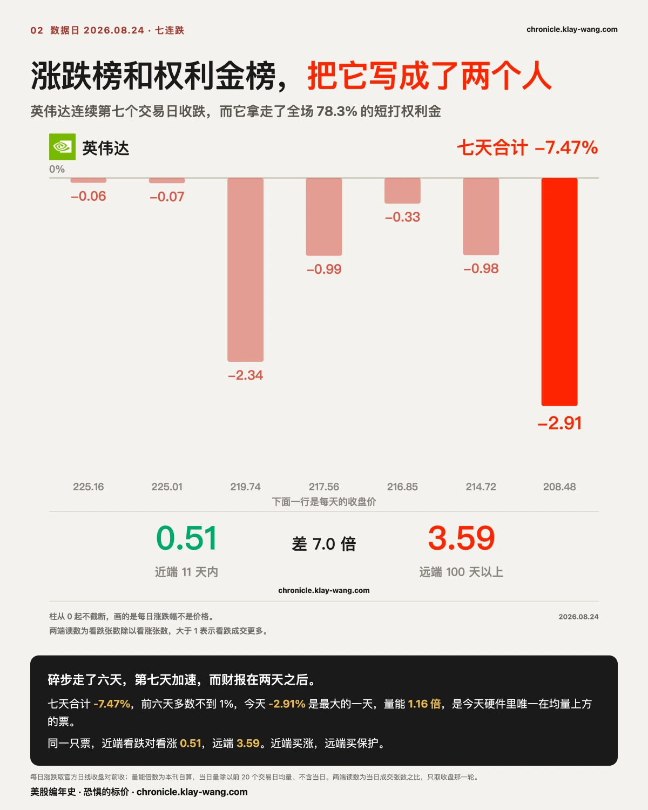
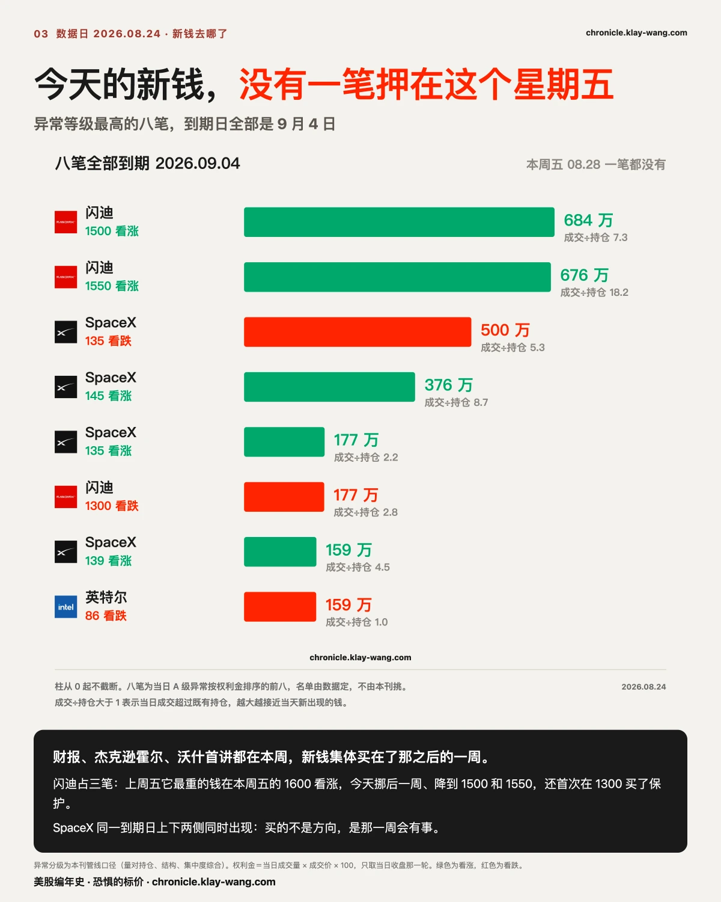
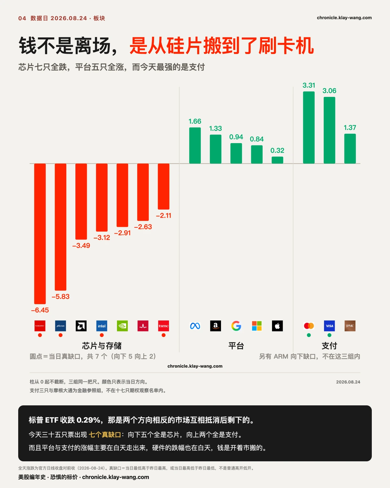
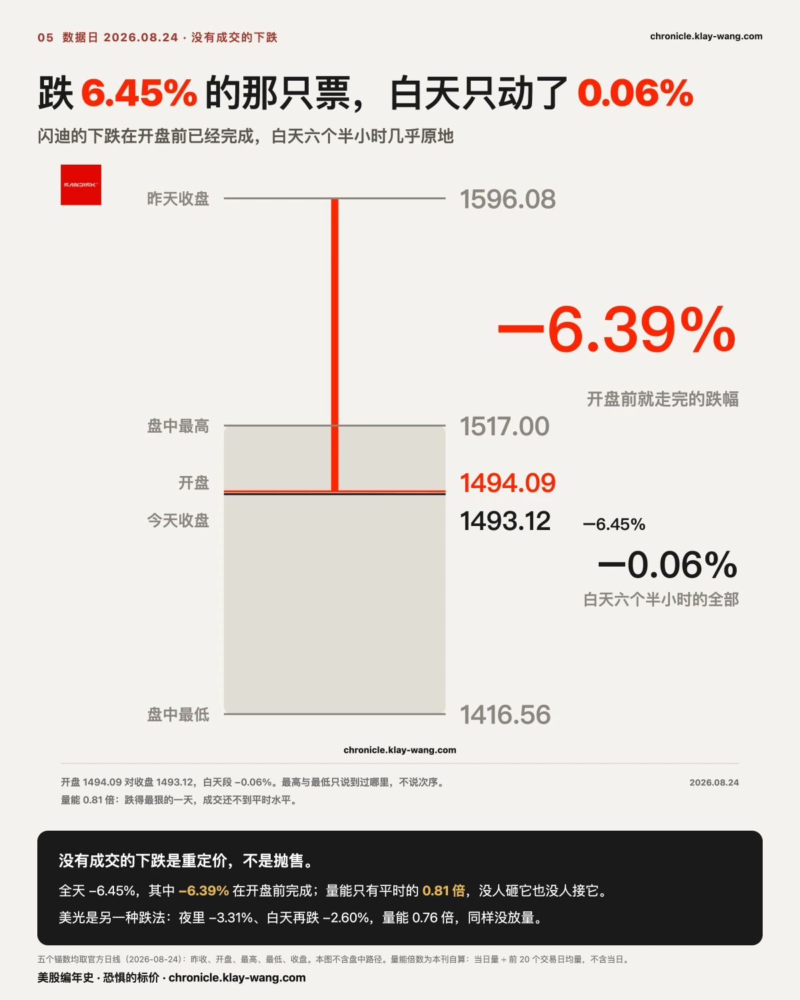
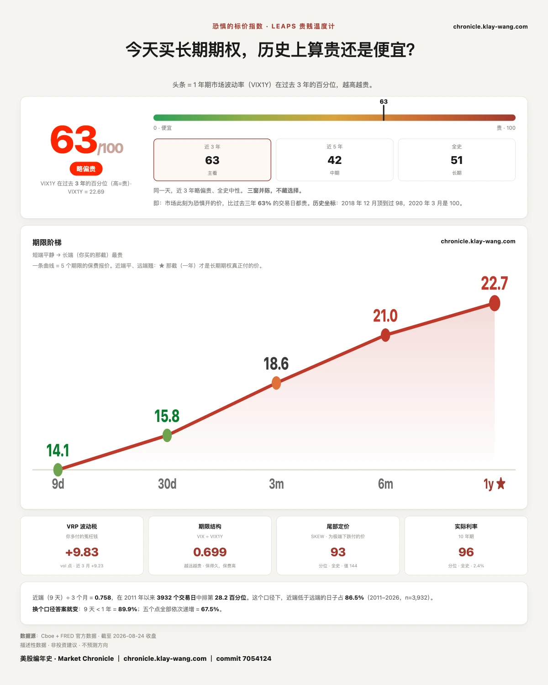

所有人都在等这个星期五，而今天的新钱一笔都没押它 · 8.24-8.28
这一期讲什么
本周的日程表是这样排的：英伟达 8 月 26 日盘后发财报，杰克逊霍尔 27 日开幕，沃什作为美联储主席的第一次讲话在 28 日，中间夹着周三的 PCE。新闻把这一周叫决战周，叫得没错。
涨跌榜今天写着标普 ETF 跌 0.29%。这个数是真的，也是今天最没有信息量的一个。
真正的东西埋在到期日里。今天异常等级最高的八笔期权，到期日全部是 9 月 4 日，没有一笔押在本周五。
同一天，远端的保护买到了近三个月最贵：一百天以上到期那一层的看跌对看涨是 2.14，过去二十七个交易日的中位数只有 0.89。近端两层什么事都没有，当天到期到十一天那层 0.50，十八天到八十八天那层 0.67，都落在常态带里。
所有人都在等本周五，而钱既不押本周五，也不押近端。它跳过了这一周，同时把远处的保险买贵了。

先把最强的反驳摆出来
有人会立刻说：期限越远看跌越多，这不是常识吗，机构长期对冲本来就买远期看跌。
这个反驳是对的，基线也支持它。把三层按天排开，过去十六个交易日里有十二天是单调的。越远越偏看跌确实是常态，单调本身不是新闻，今天的新闻是水平。
一百天以上那一层，二十七个交易日的读数从 0.47 到 2.30，中位数 0.89。今天的 2.14 排第 96 百分位，是这段序列里第二高的一天。最高那天是 8 月 13 日的 2.30，正是三组有边界的远期看跌摆上桌那天，我们当期写过。
十一天里第二次，同一层的保险被集中买贵，而两次都不发生在指数下跌的日子。
如果明后两天这个读数掉回 1.2 以下，今天只是月度到期后第一天的错位，这一段收回。
英伟达：涨跌榜和权利金榜，把它写成了两个人
涨跌榜上它是今天的输家。 收 208.48，跌 2.91%，连续第七个交易日收跌，七天从 225.30 一路下来，合计 7.47%。
权利金榜上它是今天唯一的主角。 全场短打权利金 2.996 亿，它一只占 78.3%，上周五这个数还是 32%。押在本周五那一档的钱，今天百分之百是它，1.407 亿，其他票一档都没过门槛。
同一只票，同一天，两张表把它写成了两个完全不同的角色。
七天的形状值得看。前六天是碎步：0.06、0.07、2.34、0.99、0.33、0.98，多数日子跌幅不到 1%。今天突然放大到 2.91%，成交 1.35 亿股，是七天里最大的一天，也是今天整个硬件阵营里唯一在自己均量上方成交的票，1.16 倍。碎步走了六天，第七天加速，而财报在两天之后。
把它的期权按期限拆开，两头在做相反的事。当天到期到十一天那层，看跌对看涨 0.51；十八天到八十八天那层 0.44，比全市场还偏看涨；一百天以上那层 3.59。近端买涨，远端买保护，最近那一层和最远那一层差七倍。
远端最重的两档都是深度虚值看跌。2027 年 6 月到期的 140 看跌今天成交 12.04 万张，原有持仓只有 2.57 万张，成交是持仓的 4.68 倍；2027 年 1 月的 180 看跌成交 10.18 万张，2.11 倍。140 比今天收盘低 32.9%，180 低 13.7%。
同一档合约，三个人看见三样东西。一个管着几十亿美元多头的基金经理看见一份保险，买它是为了财报之后不必被迫卖股票；一个赌方向的人看见三十二个点的空间和两年半的时间；卖出这一档的做市商既没看见保险也没看见赌注，看见的是一笔要用正股对冲掉的敞口。三个人下的是同一个单子，在成交记录里长得一模一样。
所以今天能确定的不是他们在想什么，是这个位置以前没人站，今天站满了。深虚的长期看跌大量成交，最常见的解释是尾部对冲，不是有人赌它崩盘。
这两档的持仓量有两个来源可以对，差 0.03% 与 0.92%。成交量只有一个来源，另一个源的接口今晚没返回，所以那两个十万张是单源读数。
还有一条线要接。八月中以来一直盯着做市商净 gamma 的翻转位，此前八个读数钉在 200 到 210 之间，今天早上第一次向下离开，199.09。当时写死的判据是离开首日即开奖，向下离开等于定价重心下移。
这里容易读错：离开区间的是那条线，不是股价。 今天收 208.48 仍在它上方 9.39 点，英伟达还在正 gamma 区，做市商此刻仍在压住它的波动。两条线在互相靠近，距离从八月中的 22 点缩到今天的 9 点。值得等的是股价走到它下面那天，那天起同一批人的对冲会从压住波动翻成放大波动。

今天的新钱，一笔都没押本周五
今天异常等级最高的八笔，共同点只有一个：到期日全部是 9 月 4 日。
闪迪占三笔：9 月 4 日的 1500 看涨 684 万美元，1550 看涨 676 万（成交是持仓的 18 倍），另有 1300 看跌 177 万。上周五它最重的一笔还在本周五的 1600 看涨上，1409 万。
一个周末，股价从 1596 掉到 1493，那笔钱到期结算，新钱把日期推后一周，把价位从 1600 降到 1500 和 1550，同时第一次在下方 1300 买了保护。位置跟着股价下移，方向没换，但开始付钱设防了。
SpaceX 两边都买：9 月 4 日的 135 看跌 500 万，145 看涨 376 万。一只票同一天在同一个到期日的上下两侧同时被标记，买的不是方向，是那一周会有事这件事本身。
这张表只收当天成交异常的合约，掉出门槛不等于零成交。但门槛两天没变，而过门槛的名字从一串变成了一个。

钱不是离场，是从硅片搬到了刷卡机
跌的一侧全是芯片和存储，七只无一幸免：闪迪 6.45%，美光 5.83%，AMD 3.49%，英特尔 3.12%，英伟达 2.91%，博通 2.63%，台积电 2.11%。
涨的一侧有两组。平台股五只全绿，Meta 涨 1.66%，亚马逊 1.33%，谷歌 0.94%，微软 0.84%，苹果 0.32%。而今天最强的是支付：万事达涨 3.31%，Visa 涨 3.06%，摩根大通 1.37%。
三十五只票今天出现七个真缺口，方向分得干干净净：向下的五个全是芯片（闪迪、美光、英特尔、台积电、ARM），向上的两个全是支付（Visa、万事达）。
再拆两段。平台五只里有四只涨幅在白天完成，Meta 白天段 1.60%，谷歌 1.29%，亚马逊 0.95%，微软 0.85%，苹果是例外，涨幅全在跳空里。支付两只也是白天买出来的，万事达 2.54%，Visa 2.45%。硬件反过来，英伟达白天跌 3.27%，AMD 2.52%，英特尔 1.80%，博通 1.70%。
这不是隔夜定完价白天围观的那种下跌。除了苹果和闪迪两个例外，钱是在开着市的时候从一侧搬到另一侧的。
高盛交易台本周写道，AI 交易的躺赢阶段已经结束，半导体与 AI 板块的动量已从多头转入空头，他们的高贝塔动量组合单周跌了 12%。一个量的是动量账本，一个量的是当天的盘口，两把互不通气的尺子今天指向同一件事。谁也不是谁的原因。

存储：跌得最狠的那只，白天几乎没有人动它
闪迪的锚数：上周五收 1596.08，今天开 1494.09，收 1493.12，盘中最高 1517.00，最低 1416.56。
全天跌 6.45%，其中 6.39 个百分点在开盘之前完成。正式交易时段里，它从开盘价到收盘价只动了 0.06%，成交量是过去二十个交易日均值的 0.81 倍。
跌 6.45%，白天没有方向，量不到平时水平。没有人砸它，也没有人接它。价格是在开盘前被重新写好的，白天只是照着新价格走完六个半小时。没有成交的下跌是重定价，不是抛售，重定价的意思是共识变了，不需要谁跟谁交易。
美光是另一种跌法：夜里 3.31%，白天再跌 2.60%，两段都跌，留下一个真缺口，量能 0.76 倍。三天连起来看，上周四这两只用六成的量上涨，上周五用五成的量转跌，今天用八成的量跌了 6% 上下，量能从来没回到平均值以上。上周五写过一句，盘口薄的时候方向是谁来谁定，今天来的是卖方，依然没有放量。
如果明天存储在 1.5 倍以上的量能里继续下跌，重定价就升级成抛售，这一段改口。
那笔 40 亿美元的卖出，没有出现在任何一张成交量图上
2021 年有人问 Steve Cohen 在市场里活三十年的秘诀，他说会要命的只有三样：流动性、杠杆、集中度。占一样也许还行，占两样就麻烦了，三样都占就是在坟地里吹口哨。
这三样里，只有一样会出现在你看的那张图上。 流动性出问题时价格会告诉你，但要等到已经出问题之后；杠杆和集中度在爆掉之前，图上什么都没有。
存储这两只身上正好有一份可以对表的公开文件。根据 13F，某只在 6 月底重仓存储的基金，前六大持仓里闪迪与美光合计占其组合 56% 以上，另有台积电。这三只今天分别跌 6.45%、5.83% 和 2.11%。据报道，其管理人在致客户信中称，通过逾一百笔大宗交易、总市值超过 40 亿美元，处置了所购组合 80% 以上的总体风险，涉及十只股票，时间在 7 月 30 日盘前，按当时价格再折让 10% 成交。信件未公开，这段是转述；13F 那部分官方可核，但口径是 6 月底，两个月前的持仓不代表现在。
大宗不走常规盘口，不进日线的成交量。 一笔 40 亿美元、一百多次、涉及十只股票的处置，在任何一张成交量图上都看不见。这不是哪一家的数据漏了，是这类交易本来就不从那条通道走。
所以今天那 0.81 倍和 0.76 倍是真的，但它量的是走常规盘口的那一部分。当你说一只票今天缩量，你说的其实是它在你能看见的那条通道里缩量。

名单里其余的异动，方向出奇一致
大盘和个股是同一个形状。 标普 ETF 十八天到八十八天那层看跌对看涨 2.00，一百天以上 2.04；纳指 ETF 一百天以上 4.27。它今天成交最重的四档全是看跌，位置在现价下方 4.6% 到 7.0% 之间。开头那个远端偏跌的结论，不只发生在个股上。
做市商的账本也在同一侧。 标普 ETF 今天净 gamma 是负 9.61 亿美元，纳指 ETF 负 5.07 亿。负 gamma 的意思是做市商的对冲方向和市场同向，跌了要再卖。最重的一档负 gamma 挂在 765，接近 6.25 亿，而今天标普 ETF 收在 763.47，正好落在它下面。这一层的现价口径取的是上一个交易日收盘，不是今天收盘，跨日比较时要记得。
英特尔今天同一天在两头开新仓。 10 月 2 日到期的 65 看跌，比现价低 25.5%，成交 1.2 万张而原有持仓只有 189 张，63 倍；9 月 25 日到期的 103 看涨，比现价高 18.1%，成交 1.41 万张对 235 张持仓，60 倍。它今天跌 3.12%。两个方向都是从几乎零持仓建起来的，而且都离现价很远。更远处还有一档 2028 年 12 月的 210 看涨，5392 张，那个位置比今天的收盘高 141%。
AMD 的远端是全场最极端的。 一百天以上那一层，它的看跌对看涨是 21.83，几乎没有看涨。最重的几档是 2027 年 12 月的 250 看跌、2027 年 3 月的 320 看跌、2027 年 1 月的 310 看跌。它今天跌 3.49%。
还有一笔今天最古怪的。 亚马逊 8 月 31 日到期的 220 看涨，昨天收盘时的持仓是 1 张，今天成交 620 张，258 万美元。220 比今天的收盘 262.07 低了 16%，是深度实值。这个位置的深实值看涨通常不是用来赌方向的，更像是拿来替代正股的持仓工具，但亚马逊不分红，所以那一族最常见的除息套利解释在这里不成立。这一笔没有干净的解释。明晨它的持仓留没留下来，会给出答案。
杰克逊霍尔：市场在给反应函数定价，不是给会议内容定价
上周财政部把长期国债回购规模至少翻倍，收益率只被压住不到一天，整周基本持平；同一周美元跌了近 1%，黄金站上 4600。野村的策略师把这个组合称为压力释放阀，当局按住长端，焦虑就在别处宣泄。
多家机构本周把焦点指向同一个日子：沃什 8 月 28 日在杰克逊霍尔的第一次讲话。他自今年 5 月上任以来几乎没给过前瞻指引，上一次议息会后的发言直接引发了一轮债市下跌。彭博的策略师说得最直接，财政部能调整债务的期限结构，但只有美联储能锚定通胀预期。
市场不是在猜他会说什么，是在给他的反应函数定价，也就是通胀顽固而财政恶化的时候，这个人会不会动手。 会议内容一天就消化完，反应函数会在之后每一个数据日重新被验证一次。
这也是为什么钱押 9 月 4 日比押 8 月 28 日更自洽。8 月 28 日给的是一段话，9 月 4 日给的是市场消化完那段话之后的第一个价格。
恐惧的标价：63，短端在补涨，长端一动没动
今天读数 63，上周五 62。上周五写死过：如果周一在标的不跌的情况下读数回到 68 以上，说明上周五那次回落只是月度到期日的机械效应。今天标普 ETF 跌 0.29%，读数 63.4，两个条件都没满足，那个说法今天没有被证实，继续挂着。
值得看的是这一天涨在哪一截。九天期从 12.58 涨到 14.07，一个月期 15.13 到 15.85，三个月 18.50 到 18.56，六个月 20.90 到 21.04，一年期 22.64 到 22.69，只动了 0.05。
短端涨 1.49，长端涨 0.05。今天变贵的恐惧，全部集中在最近这几天上。
同一天，Cboe SKEW 指数 143.9，处在全史 92.9 百分位，它量的是市场为极端下跌付的价。
还有一层更细的价格可以查。两只指数基金一年后到期的那一批合约，逐档报价两天前后对比，二十四档没有一档变贵。标普那边看跌一侧平均跌 0.72 个点，最深的一档跌 0.81；看涨一侧平均跌 0.38。纳指两侧都跌约 0.2。
跌得最狠的恰恰是看跌那一侧。 在成交量往远端买保护的同一天，远端保险的逐档报价不但没涨，还变便宜了，而且便宜得最多的就是保护本身那一侧。
价格说远处没变贵，成交量说有人在远处买保护。 两把尺子打架的时候不必急着选一把。今天能确定的是它们不一致，而不一致本身有很具体的含义：买保险的人已经动了，但还没多到让卖保险的人涨价。 这句话什么时候作废也清楚，如果明后两天一年期读数开始跟着成交往上走，那就是卖方开始要价，那天起两把尺子会重新指向同一个方向。

上周五那道题，今天开出来了
上周五的标题问，今天涨得最多的那只，市场为什么不相信它。当时写死：如果特斯拉不再上涨而一年期定价抬过 49，说明只是反应慢；如果继续钉在 48 附近，说明这轮上涨从头到尾没被长端接受。
今天开奖。特斯拉跌 3.83% 收 348.95，一年期定价 48.15。
三个读数连起来：上周四 48.28，上周五股价涨 5.14% 它动了 0.04，今天股价跌 3.83% 它动了 0.09。股价两天来回走了将近九个百分点，一年后的定价合计动了 0.13。长端不是没看见那轮上涨，是从头到尾没打算为它改价。
同一只票在同一张表上也换了个人。上周五它是全场第二重的权利金，1.643 亿；今天在同一张表上只剩 1030 万。而它上周五那条从 340 铺到 380 的看涨阶梯，钱最重的一档在 350，今天收 348.95，站到了那一档的下面。上周五为那一档付了 2304 万的人，一个周末之后，手里的合约从实值变成了虚值。
八月中那批指数看跌，五天之后没有散
今天远端的看跌买到了 96 百分位，很容易被读成有人在赌崩盘。上周三有一批同类的下注，现在到了可以回头验的时候，答案是相反的。
8 月 19 日，9 月 11 日到期的指数看跌里出现了四档，两两成对，成交量近乎相等：纳指 ETF 的 705 看跌 33,448 张对 680 看跌 33,349 张，差 0.3%；标普 ETF 的 760 看跌 33,945 张对 740 看跌 33,753 张，差 0.6%。当时的判断是这不是赌崩盘，是垂直价差的两条腿，买贴价档、卖更低档，赔付被封在两个行权价之间。当时写死的验证条件是：次日看两条腿的持仓量，两档同步上升相近数量则成立，只有贴价档升、更低档没动则不成立。
四条腿的持仓量全部同步暴涨。 纳指 705 从 1,372 张涨到 33,721 张，680 从 1,444 涨到 34,088；标普 760 从 1,923 涨到 34,964，740 从 2,599 涨到 33,707。四档的增量在 3.11 万到 3.30 万张之间，彼此差不到 2,000 张。没有出现只有一条腿动的情况，价差成立。
到今天为止又过了三个交易日，这批仓位还在：标普 740 看跌 34,382 张，760 看跌 35,115 张，纳指 705 看跌 34,080 张。建起来五天，一张都没散。
所以远端的看跌买得多，和有人在赌崩盘是两件事。 有边界的价差付的是一段区间里的钱，跌穿下沿一分不多赔；裸买看跌付的是无限下方。前者是买保险的人在控制保费，后者才是赌方向。今天那 2.14 的读数里两种都有，从比值本身分不出来，能分出来的是有没有配对的另一条腿。
口径说明一句：那四档在 8 月 20 日只有纳指 705 一档进了异常表，其余三档是 8 月 21 日的读数。这张表只收当天成交异常的合约，掉出门槛不等于持仓没变。
这对你手里的票意味着什么
不给操作建议，只把今天的价格换算成你能自己判断的东西。
手里有英伟达，或者有和它财报绑在一起的票：今天全场 78% 的短打权利金压在它一只上，最重的一笔贴着现价买跨财报的两边，买的是波动不是方向；而同一只票的远端，看跌是看涨的 3.59 倍。如果你打算在财报前后做点什么，先想清楚自己赌的是方向、是波动、还是在买保险，今天这三样东西的定价差别很大。
手里有存储：连续三天，这两只票在低于平均的成交量里走出了 6% 级别的价格。而今天那份 13F 提醒了一件事，你看得见的成交量只是走常规盘口的那一部分。
手里有支付或平台股：今天唯一两个向上的真缺口都在支付，而且这两组的涨幅主要是白天买出来的。这是今天唯一有人在开着市的时候主动加仓的地方。
什么都没拿，在等一个进场点：今天最高等级的八笔，一笔都没押本周五。市场自己把最不确定的那一天从桌上清掉了，这个动作比任何观点都诚实。而近端的保险仍然是曲线上最便宜的一段，九天期只有一年期的六成。
今天值得带走的三句话
新闻里的决战周和钱押的那一周可以完全不是同一周。当一个日期人尽皆知，先被定价的往往不是那一天，是那一天之后的第一个价格。
同一只票的近端和远端可以在同一天做相反的事。只看一个到期日，等于只听了一句话里的一个字。
价格说远处没变贵，成交量说有人在远处买保护。两把尺子打架的时候不用选边，愿意付钱的人还没多到把价格推上去，这本身就是今天的读数。
预告与下一期回访
远端那 2.14 是不是月度到期后第一天的错位。若明后两个交易日一百天以上那层的看跌对看涨掉回 1.2 以下，今天这一段收回；若维持在 1.8 以上，说明是持续布置。只引长天期异常表 EOD 那一轮，跨期一律先筛轮次。
英伟达 210 看涨那 2630 万，成交是持仓的 4.9 倍，明晨结算后持仓留不留得下来。明晨该档持仓对今日成交，比值向 1 靠近算新建仓，接近 0 算当日来回。最晚 8 月 25 日必须取，过期按老规矩放弃并说明。
那两档十万张的深虚看跌，成交量今晚只有单一来源。明日补一次异源成交量，对不上就在下一期如实更正，不等它自然消失。
英伟达七连跌之后。若第八天在 1 倍以下量能收涨，今天的放量下跌是六天碎步的了结；若继续放量下跌并跌破 199.09，那是重心下移的第一个确认。
存储缩量重定价的第四天。若明天在 1.5 倍以上量能继续下跌，重定价升级为抛售，本期那一段改口；若继续缩量，读法保持。
新钱跳过 8 月 28 日是不是只是到期日后第一天的错觉。若明后两天 A 级异常重新集中回 8 月 28 日，本期读法收回。
恐惧的标价 63 之后。判据照旧，机械效应那个说法只在标的不跌且读数回到 68 以上时才成立，今天两个条件都没满足，继续挂。
亚马逊那笔 620 张的深实值看涨。明晨持仓若增加到 600 张上下，是有人建了一个正股替代的仓；若回到个位数，是当天来回。今天的解释不到位，明天要么补上要么明说放弃。
恐惧的标价指数（Fear-Price Index）· 2026-08-24 · 读数 63/100：一年期波动率 VIX1Y 为 22.69，处于近三年第 63 百分位，高即贵。逐日台账与口径 → chronicle.klay-wang.com · 转载注明：恐惧的标价指数 · Market Chronicle
本站不提供投资建议，不预测方向，不做择时。